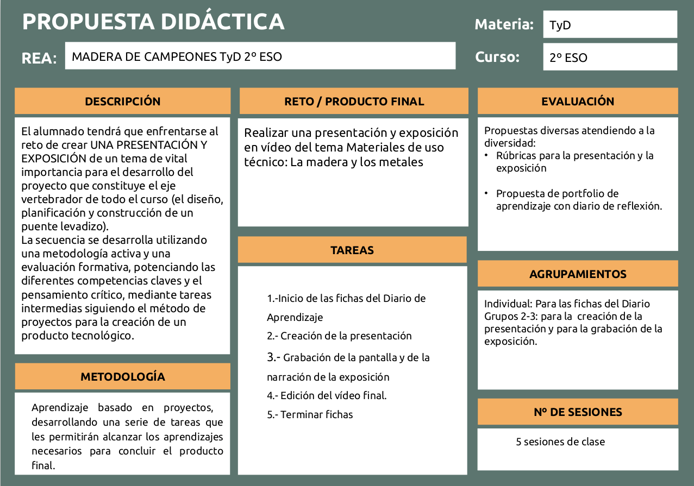

Descripción General
La situación de aprendizaje "MADERA DE CAMPEONES TyD 2º ESO" se enmarca dentro de la asignatura de Tecnología de 2º ESO, pudiéndose desarrollar también en 3º ESO ya que en el primer ciclo de la Educación Secundaria Obligatoria se trabajan las mismas competencias específicas y los mismos saberes básicos.

El alumnado tendrá que enfrentarse al reto de crear UNA PRESENTACIÓN Y EXPOSICIÓN de un tema de vital importancia para el desarrollo del proyecto que constituye el eje vertebrador de todo el curso (el diseño, planificación y construcción de un puente levadizo)
La secuencia se desarrolla utilizando una metodología activa y una evaluación formativa, potenciando las diferentes competencias claves y el pensamiento crítico, mediante tareas intermedias siguiendo el método de proyectos para la creación de un producto tecnológico.
Gran parte del trabajo se realizará de manera colaborativa: el alumnado deberá trabajar en equipo, llegar a acuerdos, tomar decisiones, repartir tareas..., potenciando así su competencia ciudadana, competencia personal, social y de aprender a aprender y su competencia emprendedora. Todo el proceso implicará el uso de herramientas digitales, investigación en la red... trabajándose así la competencia digital. Por otra parte, las tareas de creación de documentación permitirán desarrollar las competencias lingüística, cultural y artística.
Para poder desarrollar el ámbito competencial de los alumnos, vamos a basarnos en elementos metodológicos, los cuales encajan en la definición de "metodologías activas", estando recogidas en las recomendaciones metodológicas que la propia LOMLOE establece.
- Aprendizaje basado en proyectos, cuyo producto final será la maqueta, desarrollando una serie de tareas que les permitirá alcanzar los aprendizajes necesarios para concluir el producto final.
- Aprendizaje cooperativo, como forma de organizar el trabajo de los alumnos dentro del aula, utilizando para ello el tablero Kanban para facilitar esta organización.
Todo ello acompañado del uso de dispositivos móviles en el aula y de herramientas TIC que permitan la adquisición de competencias, saberes y elaboración de “productos”.